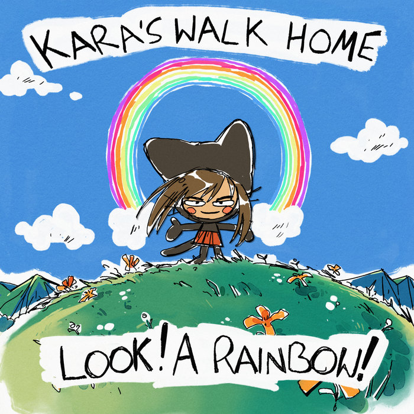
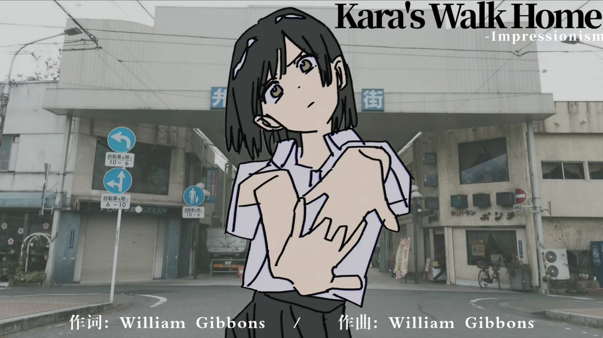

Day 127

Kara’s Walk Home ◆ Look! A Rainbow! ◆ 2022
这张专辑是我在哔哩哔哩上看到音乐介绍视频发现的：Emo/情绪摇滚 | 任凭世界如何变化 你曾经可爱的模样仍然清晰的刻在我的眼前。看到封面点进去的，没法抗拒这种不高兴的表情ww

主唱的嗓音与其说只有感性没有技术，不如说听着像是故意的。不过听多了以后再结合歌词感觉，妈的，就得这么唱。歌词讲述了一个有些迷茫的青少年的人生和所思所想，非常真实赤裸，触动人心。
我可能最喜欢 Ông Nội 的歌词，能感受到一个青少年的依恋、无奈、愤怒、懊悔、迷茫混在一起。而 Gauge Means Nothing in the Car 里 I, I, I, I, I, I, I, I 开始的双重唱十分震撼。不如说说整张专辑的旋律音色都浸透了感染力，震撼人心；与其说演奏音乐不如说是在演奏情绪，这个流派不愧是叫 Emo。
最厉害的是歌词复杂的同时编曲一点都不俭省，各种细节和音色的配合恰当好处，时而安静、时而冲击。
我附上了 Ông Nội 和 Gauge Means Nothing in the Car 的歌词，请感受对方赤裸的展示：
Ông Nội
I overheard someone talking, they said that
You took your brother's name
After he died and you left yours
In Vietnam
Thanks for the eggs that you cooked when I was sick
Think i can say that much
Hey grandpa you look good in that suit
I finished high school, can you believe it?
As I walked in to your room
The sunlight reflected off your sheets
No one looks you in the eyes
As you struggled to make a sound
I can’t quite express all the things i regret
My sister cried when i got her friеnds sent home
I held hеr in my arms as we got scolded in the hall
By my stepmom
But it was too late
I blamed my mom for the things my family said
It wasn’t her fault but she was the only one around
I’ve talked so much shit about the people i love most
So what does that say about me?
See rock shows near San Francisco
Get tickets as low as $42
You might also like
Fuck this shit! I deserve this
At cô Ly’s wedding, she made sure to have a speech telling
How sad she was that you already died
And everyone was crying as she danced with her brother
Just like you and grandma
And I could hear my dad as your first family planned your funeral
And through the door he screamed
“Fuck him! He’s not done anything for us!”
And so, how could I come?
Do you know? what you left me work with?
If I came to see you i’d be betray my dad
There’s just no easy answer
You left my dad when he was just a kid and
Your second marriage it was just so perfect
And you said it was ok if I did anything at all
Just finish college first, alright
Fuck this shit, should I have called more?
Don’t hold me back, I feel so guilty but all i want to say is just
Fuck you, you just don’t know how complicated it be to just come and visit
But I would call, if I could, and tell you my life didn’t end up quite the way I wished
And I’ve got so many questions that I just didn’t care about when i had the chance
And just know, that all this time, I hear your words and I try to let go
But I
Just can’t
Forget it
I can’t forget it
I can’t forget it
You laid in bed, fucking god the sunlight’s so bright
And I could see every contour of your bones
And your hair was gone, but I remember
And your voice was gone, but I remember
And you said, “hey why didn’t you come more?”
Now I can’t believe you’re gone
Source: Genius, modified by me
Gauge Means Nothing in the Car
June came a little too early
And summer ended a little too late
And now I’m gonna be behind on work
I miss the east coast humidity
I never though I’d say those words
But I guess I got a lot of reading done
Hey I really loved War and Peace, but will I feel the same in 15 years, I don’t know
Time passed a little too slowly, but it’s only because I know I’m stuck
It took some time but Rosie’s been nicer
I guess my attitude was just bad
Hey mom are you thinking about us?
Don’t worry, I know you needed a break
Oh plеase just don’t forget we’rе here
It might be what we want some day
We listened to screamo on the way to the airport
You said it sucks but maybe you could like it?
Hey mom, you could start a band, or at least try karaoke?
Oh god wasn’t the sky so beautiful
I could have cried if I wasn’t so embarrassed
Just looking at a picture
We used to live somewhere that nice
Just throw my name away, I’m going somewhere better
Or at least somewhere that no one cares
Picture someone driving up a mountain away from a place they hate
Or so I tell myself, you know I’m not that cool
Did I have dreams anyways? And if not is that so bad?
Isn’t it enough just to want to live?
And I’ll forgive almost anything but it doesn’t mean I’m just another hand to help out
But the sky is clear today and I’ve got to do laundry
We were at the store and I could feel people judge us, I was a little loud but maybe I’m just sensitive
But lately I’ve been going out at 6, buying spinach even if I don’t eat it
Hey you know it’s just a start
It’s all about building good habits
The other day when I was running around the lake, I met someone and she said that she used to play the drums
I was in your room listening to your music, I guess I lied when I said I hated it
Sometimes I guess I want to scream too
And I got older but there are still things I’d like to do
The sun rays at 9:00 only make me feel a little less bad
Quitting my job and sending you away, was it too much this time?
Oh god, I, I, I, I, I, I, I
I just don’t know how I’m supposed to live
So I got older, but why am I still so stupid?
It’s like I can’t see my own face, when I think about it
I just wanted a little more time
But I can’t seem to take care
Of myself
Without hurting someone else
(life passes in many ways
Life flashes away and
I once though i could know anything at all but
Joints hurt and lungs wheeze
So I just do nothing but
Stare out of the window and think, was it worth it?)
When you were young and we lived in California
Your dad would come around but I never really told you
That piece of shit, he never tried to raise you but he’d come around and just tell me I was doing it all wrong
What did I lose this time?
I never see the car before I’m already hit
I always lived like I was running to the finish line
Not to die but just to live differently
And it seems I, I, I, I, I, I, I, I
I fucked it up again
And just to give myself a chance
So I got older, I was always waiting
For a chance to have a break, and figure out what I wanted
I don’t care how brittle my bones get I’m still here, judge me if you want to
I’ll keep telling my self I don’t care
(life just passes quickly
I know it’s something everyone
Says but i never really
Took it too seriously
Gazing back at decades, thinking of the moments
And the hard headed way i lived that didn’t make anyone happy)
We all get older, it seems I missed
20 years as a young adult, but is it too late?
I’m still here and I’ve got my dreams
Buried as they are by years of part time;
So I can’t be famous… Who said that was the point?
(no regrets for our youth!
Sounds like a nice title
Of a film, but one that i could
Never relate to
Cause I’ll always regret
Ignoring my family’s feelings…)
Forget my name and forget my face, I don’t wanna be remembered
Forget my name, and forget my face, I wanna start over
I wanna go somewhere, I wanna go somewhere else
(I want to be no one, but I don’t wanna disappear, I want to be no one at all)
Hey, I’m sorry
Oh god I’m sorry
Source: Genius, modified by me